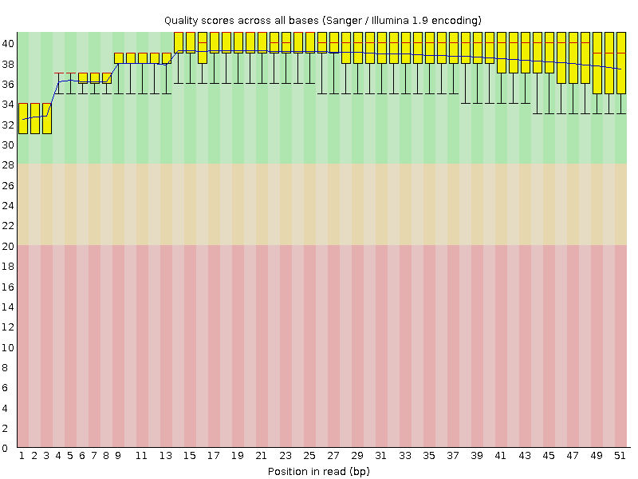
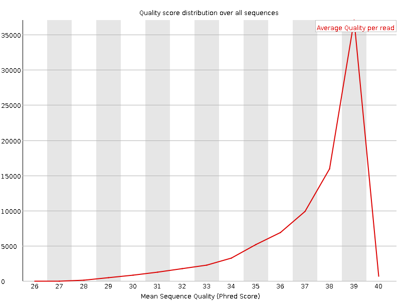
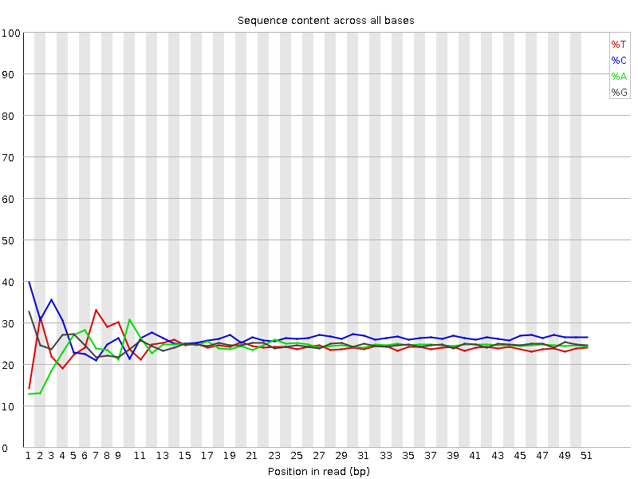
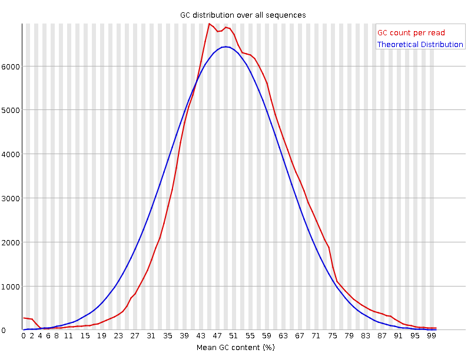
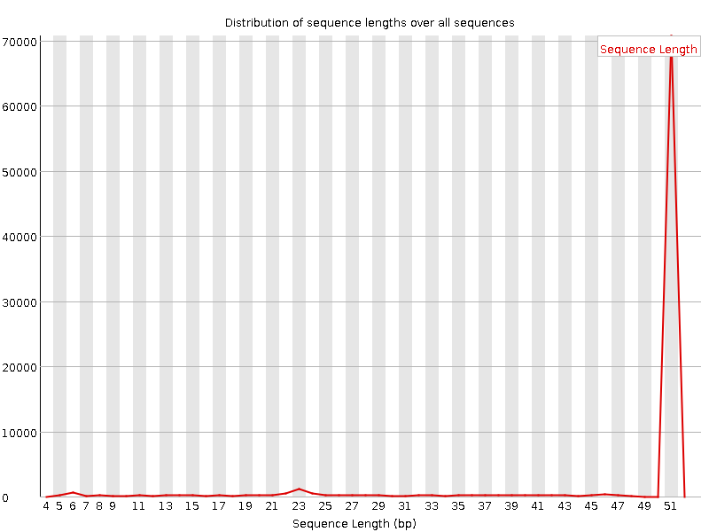
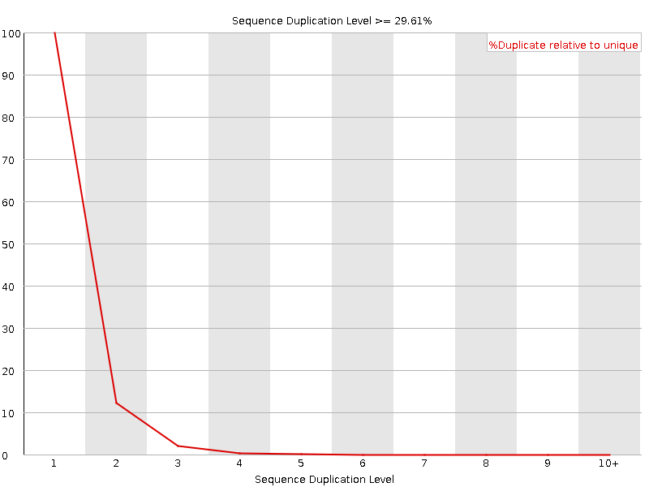
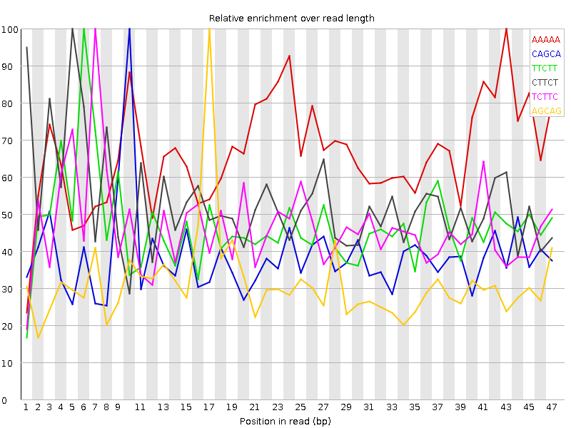

![[OK]](Icons/tick.png) Basic Statistics
Basic Statistics
| Measure | Value |
|---|---|
| Filename | Sample_1_L001_trimmed.fastq |
| File type | Conventional base calls |
| Encoding | Sanger / Illumina 1.9 |
| Total Sequences | 86201 |
| Filtered Sequences | 0 |
| Sequence length | 5-51 |
| %GC | 51 |
Per base sequence quality

Per sequence quality scores

![[FAIL]](Icons/error.png) Per base sequence content
Per base sequence content

Per base GC content

![[WARN]](Icons/warning.png) Per sequence GC content
Per sequence GC content

Per base N content

Sequence Length Distribution

Sequence Duplication Levels

Overrepresented sequences
| Sequence | Count | Percentage | Possible Source |
|---|---|---|---|
| ACGCGT | 392 | 0.45475110497558036 | No Hit |
| TCAGTGCACTACAGAACTTTGTA | 252 | 0.29233999605573024 | No Hit |
| TGAGATGAAGCACTGTAGCTCTA | 250 | 0.2900198373568752 | No Hit |
| TGAGATGAAGCACTGTAGCTCA | 175 | 0.20301388614981267 | No Hit |
| TGAGATGAAGCACTGTAGCTCGA | 90 | 0.10440714144847507 | No Hit |
Kmer Content

| Sequence | Count | Obs/Exp Overall | Obs/Exp Max | Max Obs/Exp Position |
|---|---|---|---|---|
| AAAAA | 14350 | 4.7861996 | 7.2304296 | 43 |
| CAGCA | 12620 | 3.351567 | 8.650754 | 10 |
| TTCTT | 10690 | 3.1100435 | 6.6315494 | 6 |
| CTTCT | 11455 | 3.044192 | 5.6919007 | 5 |
| TCTTC | 10380 | 2.7585084 | 5.9031224 | 7 |
| AGCAG | 9200 | 2.624124 | 8.312207 | 17 |
| CAAAA | 8290 | 2.5024998 | 8.733197 | 13 |
| AAAAG | 6925 | 2.2451596 | 8.689739 | 14 |
| CTCCT | 8805 | 2.1374433 | 6.079971 | 1 |
| TGAAG | 6595 | 2.0593164 | 10.235809 | 6 |
| TCAGC | 7745 | 2.0379913 | 8.306164 | 9 |
| GATGA | 6445 | 2.012478 | 10.569791 | 4 |
| TCCAG | 7535 | 1.9827327 | 5.9450912 | 2 |
| CTCCA | 7815 | 1.9147052 | 8.008439 | 1 |
| GCCAG | 7410 | 1.9129134 | 5.917729 | 1 |
| GCAGG | 6525 | 1.8091125 | 6.9817643 | 18 |
| AAGCA | 6140 | 1.8016747 | 9.811417 | 8 |
| CAGAA | 6070 | 1.7811345 | 5.339727 | 12 |
| GAAGC | 6200 | 1.7684313 | 9.503697 | 7 |
| AGCAC | 6595 | 1.7514728 | 9.023549 | 9 |
| AGCAA | 5965 | 1.750324 | 7.9094553 | 11 |
| ATGAA | 5320 | 1.7089581 | 10.70251 | 5 |
| ATCAG | 5755 | 1.6731913 | 8.32346 | 8 |
| TCAGG | 5815 | 1.643382 | 5.0027194 | 8 |
| AGCTC | 6075 | 1.5985535 | 9.45166 | 17 |
| TTTGT | 4990 | 1.5591835 | 5.3163686 | 18 |
| GTCCA | 5795 | 1.5248753 | 5.1941924 | 1 |
| AGATG | 4850 | 1.5144328 | 10.0035 | 3 |
| GCAAA | 5010 | 1.4700961 | 7.293286 | 12 |
| GATCA | 4920 | 1.430426 | 7.9776597 | 7 |
| TGAGA | 4370 | 1.3645507 | 9.875265 | 1 |
| AAAGC | 4635 | 1.360059 | 6.971062 | 15 |
| TGTAG | 4395 | 1.3597513 | 10.365492 | 14 |
| GAACT | 4610 | 1.3402975 | 6.104164 | 14 |
| TGATC | 4590 | 1.3222249 | 7.6293826 | 6 |
| CACTG | 4905 | 1.290684 | 9.185794 | 11 |
| AACTT | 4320 | 1.2802296 | 6.1105037 | 15 |
| AGAAC | 4260 | 1.2500218 | 5.1587625 | 13 |
| GCACT | 4640 | 1.2209529 | 8.918777 | 10 |
| CTGTA | 3750 | 1.080249 | 9.35957 | 13 |
| GAGAT | 3445 | 1.0757157 | 9.717015 | 2 |
| GTGAT | 3470 | 1.0735692 | 8.902201 | 5 |
| ACTGT | 3680 | 1.0600843 | 9.90881 | 12 |
| GTAGC | 3415 | 0.9651161 | 8.994195 | 15 |
| GCGTG | 2840 | 0.7801816 | 6.2609563 | 3 |
| TAGCT | 2620 | 0.75473404 | 9.077615 | 16 |
| CGCGT | 2925 | 0.74816144 | 10.249415 | 2 |
| CGTGA | 2240 | 0.63304836 | 6.458821 | 4 |
| ACGCG | 1915 | 0.49436292 | 9.917676 | 1 |